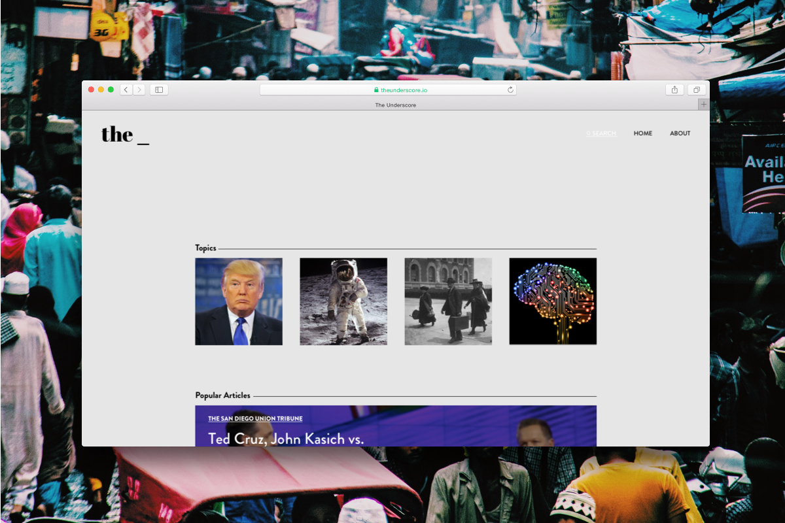
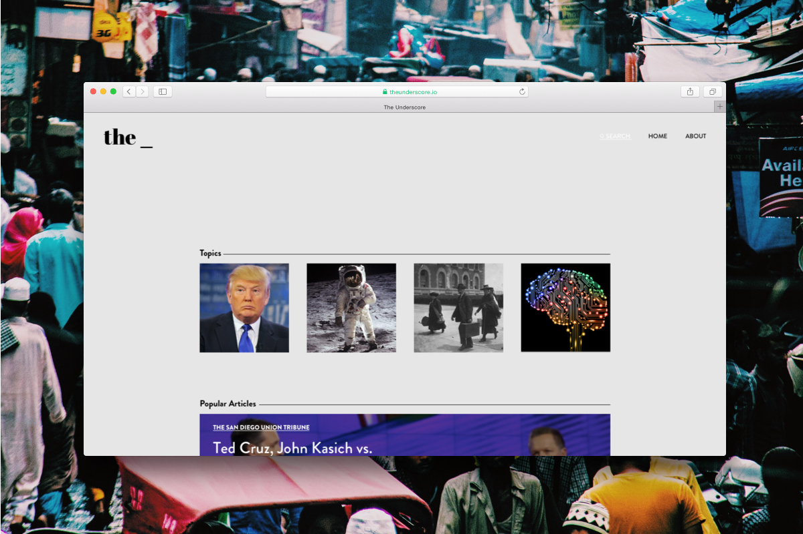

—
the underscoreThis is a personal project that aims to solve a simple problem of current ways of news curation.
The problem with the way that we get news today is that the article or video a user comes across, has a view that the user will most likely agree with. Platforms such as Facebook curate news towards a user based on the preferences
of their circle of friends, location, browsing history, etc. This biased way of curation generates more readers and clicks but almost never provides the whole argument.
To solve this, the Underscore would be a platform where the user could find a group of articles or videos that show different approaches and viewpoints on a particular topic.
The process:


For the process I explored wireframing simple versions for the website and then slowly adding defined changes. I wanted to keep the design simple and keep the focus on the content.
The underscore would be a weekly updated news curator that gives the reader varied perspectives of certain topics. This would, if interested, allow them to see two sides of a story.
With the website I had to consider interaction design functions such as mouse hover, clicking and button or page animations to make sure the use of the website would be intuitive. I made the first prototype and the latest iteration
of the design using my knowledge of HTML, CSS and JavaScript/JQuery.
The details, images and gifs of the latest version:


The Full pages:

 
